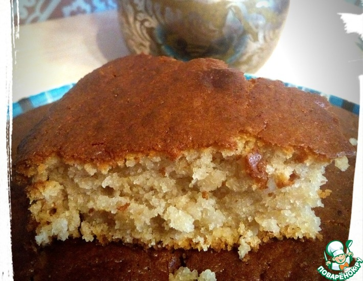

Mannik

Description
It is a traditional Russian baking, which is cooked on any occasion as a bread, cake (if you put some filling and topping). It has a very porous texture and is soft and fragile, it will surely please even the most capricious - in addition it cooks very simply, without special techniques and super ingredients.
The filling can be different - nuts, chocolate, raisins, dried fruit, etc. - on top go greased with jam, melted chocolate, or simply with powdered sugar.
Ingredients
- Semolina - 1 cup
- Buttermilk/Youghurt/Kefir - 1 cup
- Sugar - 1 cup
- Butter - 100 g
- Egg - 2 pieces
- Salt - 0.25 tsp
- White flour - 1 cup
- Baking powder - 10 g
- Vanilla Extract - 1 tbsp
- Dark chocolate - 100 g for the filling
Steps
- Put the semolina in a bowl, add the kefir and mix well so that they are not lumpy. Let this composition soak the semolina well for about 2 hours.
- After this time you will notice that the composition will thicken well.
- Melt the butter and mix with the sugar.
- Add this composition to the semolina with kefir and mix well.Then add eggs and salt, mix well.
- And the last one is flour mixed with baking powder, vanilla and chocolate cut into small pieces.Mix well with the target.
- Pour the dough into a tray lined with baking paper (here I have a silicone tray, so do not spread it and do not grease it with anything) and put it in a preheated oven at 200 degrees for 30 minutes.
- Be careful not to keep it too long in the oven, 30 minutes is very enough - the cake browns and grows nicely.
- Leave it in the tray for about 15 minutes then take it out carefully and put powdered sugar or melted white chocolate on top.
- Serve with great pleasure and enjoy Good appetite!